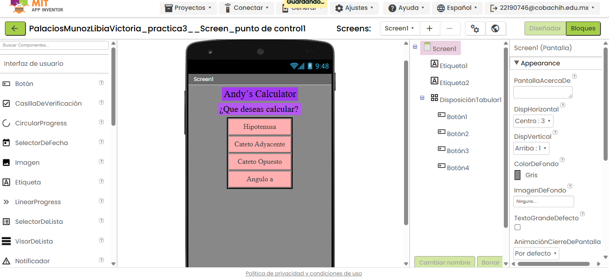
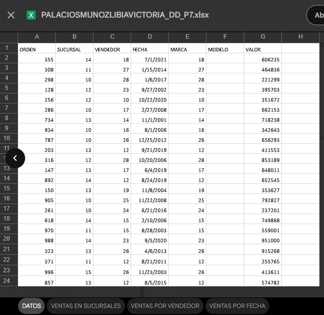
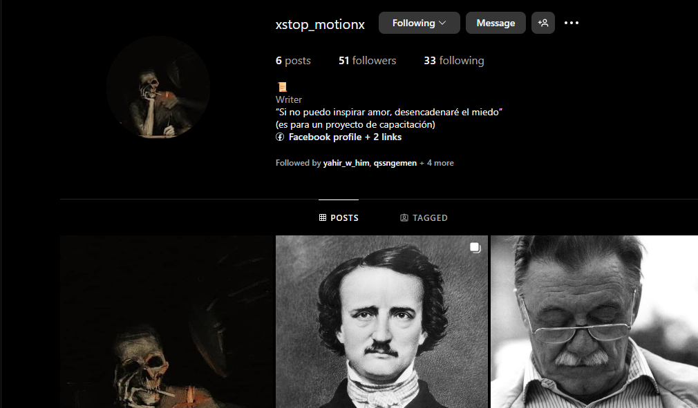
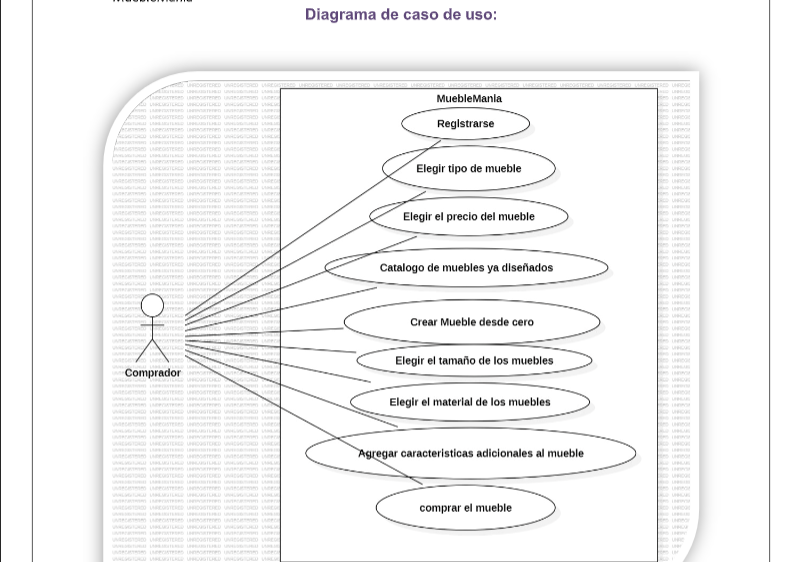
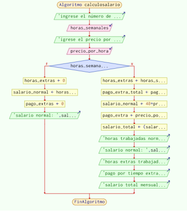
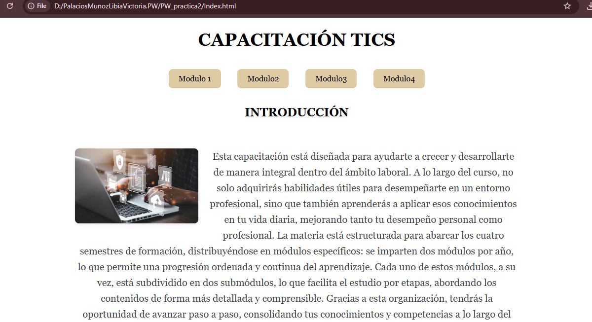

Esta capacitación está diseñada para ayudarte a crecer y desarrollarte de manera integral dentro del ámbito laboral. A lo largo del curso, no solo adquirirás habilidades útiles para desempeñarte en un entorno profesional, sino que también aprenderás a aplicar esos conocimientos en tu vida diaria, mejorando tanto tu desempeño personal como profesional. La materia está estructurada para abarcar los cuatro semestres de formación, distribuyéndose en módulos específicos: se imparten dos módulos por año, lo que permite una progresión ordenada y continua del aprendizaje. Cada uno de estos módulos, a su vez, está subdividido en dos submódulos, lo que facilita el estudio por etapas, abordando los contenidos de forma más detallada y comprensible. Gracias a esta organización, tendrás la oportunidad de avanzar paso a paso, consolidando tus conocimientos y competencias a lo largo del tiempo.

Módulo 1
Para este módulo usamos MIT App Inventor, que viene siendo una plataforma gratuita que permite crear apicaciones móviles ya sea para android o ios de una forma muy sencilla y sin la necesidad de tener un programa muy avanzado. Manejamos también herramientas básicas de excel y word, tipo fórmulas, gráficas, encabezados y pies de página.
Módulo2
En este módulo usamos las redes sociales para dar a conocer un tema de nuestro interés. También dimos mantenimiento a una computadora.
Módulo3
En este módulo comenzamos a adentrarnos en la programación por medio de los diagramas de flujo en idioma C++ que es un lenguaje compilado, rápido y muy utilizado en aplicaciones. También comenzamos a programar por medio de CMU Academy que es una plataforma educativa desarrollada por Carnegie Mellon University, una de las universidades más prestigiosas de EE. UU. en ciencias de la computación.
 Módulo4
En este módulo comenzamos a crear páginas web html, comenzamos a editar y crear imágenes por medio de photoshop y Adobe Ilustrator, comenzamos usando las herramientas más sencillas hasta algunas más complicadas, verdaderamente no siempre salieron los diseños bonitos, alguna vez las herramientas hacían lo que querian pero casi no me tocó vivirlo ya que este semestre reprobé pero ya me estoy recuperando.
